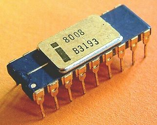

2.12.2. Микропроцессоры
Микропроцессор представляет собой процессор, составные части которого миниатюризированы и размещены в одной или нескольких микросхемах. История микропроцессоров началась в 1971 г., когда фирма Intel разработала первый в мире четырехразрядный процессор 4004, а через год — восьмиразрядный 8008. На основе микропроцессоров создана новая элементная база — микропроцессорные средства, на которых строят современные компьютеры. В наше время термины "процессор" и "микропроцессор" воспринимают как синонимы.
Микросхема, выполняющая функции микропроцессора или его части, называется микропроцессорной. Совокупность микропроцессорных и других микросхем, совместимых по конструктивно-технологическому исполнению и предназначенных для совместного использования, называется микропроцессорным комплектом (МПК).
К характеристикам микропроцессорных ИМС относятся: размеры кристалла и количество транзисторов в нем, тип корпуса и количество выводов.
Наиболее важными статическими и динамическими электрическими параметрами микропроцессоров как микроэлектронных изделий являются:
- количество источников питания и их напряжение;
- ток и мощность потребления;
- количество серий синхроимпульсов, их частота и амплитуда; уровни логических сигналов;
- входная и выходная емкости, нагрузочная способность;
- время задержки распространения сигналов, число операций в секунду над операндами, хранимыми в регистрах-аккумуляторах.
В зависимости от условий эксплуатации к микропроцессорным ИМС могут предъявляться специальные требования относительно:
- температурного диапазона работы и режима хранения;
- устойчивости к радиационным и электромагнитным влияниям, вибрациям и ударам;
- массы и габаритов;
- интенсивности отказов, наработки на отказ, надежности функционирования.
Микропроцессор, предназначенный для использования функционально полного набора операций, является универсальным, иначе — специализированным.
По конструкции различают следующие микропроцессоры:
- однокристальные – выполнены в виде единой микросхемы (рис. 10.2.а);
- многокристальные (модульные) – построены из микросхем, каждая из которых выполняет функции устройства компьютера (рис. 10.2.б);
- разрядно-наращиваемые (секционные); их разрядность может увеличиваться за счет нескольких микропроцессорных секций, объединенных общими шинами (рис. 10.2.в).
Рис. 27.2. Конструкции микропроцессоров: а – однокристальные; б – многокристальные; в – секционные.
Все микропроцессоры имеют средства сопряжения с внешними устройствами — интерфейсы (ИФ).
Для производства микропроцессоров используют все виды схемотехники (технологий): ТТЛШ, ЭСЛ, И2Л, n-МОП, р-МОП, КМОП и др.
В зависимости от режима работы различают следующие процессоры:
- однопрограммные (выполняют одну программу) и многопрограммные (имеют средства для одновременного выполнения нескольких программ);
- мультипроцессоры (системы, в которых одновременно могут быть активны несколько процессоров);
- конвейерные (команды выполняются последовательно рядом устройств, причем различные устройства могут одновременно обрабатывать соответствующие части нескольких команд);
- матричные (имеют специальную архитектуру, рассчитанную на обработку числовых массивов);
- сопроцессоры (арифметические расширители) — предназначены для расширения списка команд ЦП, самостоятельно не используются;
- периферийные — выполняют функции ввода-вывода информации;
- ассоциативные процессоры, в которых характер обработки данных определяется содержимым самих данных.
По виду обрабатываемой информации различают цифровые (обычные) и аналоговые микропроцессоры. В аналоговых микропроцессорах на входе используют АЦП для преобразования аналоговых величин в цифровой код, а на выходе — схемы ЦАП, преобразующих цифровые данные в аналоговые.